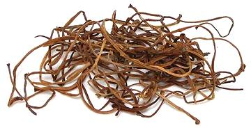

Sweet Potato Stems

[Goguma-sun Goguma-julgi (Korea); Ipomoea batatas of family
Convolvulaceae]
In many regions, Sweet Potato Leaves
are much used, but in Korea, it's the leaf stems, and the leaves are
discarded. The stems are a popular vegetable, both fresh and dried.
They are often prepared as namul (seasoned vegetables) and served as
banchan (small side dishes).
American sweet potatoes are somewhat different from the Korean. The Korean
have red skins, but bright yellow flesh, not orange, and the stems have
purple skins, not green. Young stems of American sweet potatoes have been
found quite suitable for Korean recipes.
More on Morning Glories & Yams
Fresh sweet potato stems and dried stems differ in texture and taste, and
make rather different recipes. Fresh are much preferred, but are available
only when in season.
Buying & Storing:
In most of North America, if you want
fresh stems you have to grow them yourself, or know someone who does. They
are, however, available dried from well stocked Korean markets here in
Los Angeles, and on-line. Sealed packages, kept away from heat and sunlight,
should last over a year. The photo specimens were purchased at a Korean market
in a 4 ounce bag for 2015 US $3.79, or $15.16 per pound.
Yield:
4 ounces dried made 1 pound 2-5/8 ounces after boiling
and cooling (4.7 times). After soaking an additional 10 hours, weight was 1
pound 8 ounces = 6 times, so the extra soak is worthwhile for both weight and
texture.
Cooking:
The dried shoots must be rehydrated, and that
doesn't happen real fast. Korean cooking maven Maangchi recommends this
procedure:
- Take dried Sweet Potato Stems out of the package and rinse.
- Put the Dried Stems in a pot with cold water to cover it
by 3 inches. Cover the pot and bring to a boil for 30 minutes.
- Set the pot aside, covered, and let cool for 2 to 3 hours.
- Drain Stems and rinse.
- Return to the pot. Cover with cold water by 3 inches. Let soak
overnight or at least 10 hours.
- Rinse and drain. It is now ready for use in recipes.
Should you actually have fresh sweet potato vines, this is what you
do with them. Note that in Korea, peeled sweet potato stems are sold
bagged in water, but not around here. Very young thin stems need not be
peeled.
- Cut the leaf stems off the vine, starting at the first mature leaf and
cutting back down the vine until you encounter defective stems. Leave the
leaves on the stems. The stems will be about 4 to 6 inches long.
- Bring plenty of lightly salted water to a full boil. Blanch you leafy
stems for about 5 seconds, then quench in cold water.
- Break off (do not cut off) the leaves at the tip by bending to one
side. They will still be attached by the skin. Pull them down the stem
to pull off the skin on one side.
- Break off just a little of the tip in the opposite direction from
breaking off the leaves, and use this tip to peel off the skin on
the other side of the stem. Discard leaves and skins.
- Rinse the peeled stems in two changes of water, sloshing them
around well.
- Put them in a pot with water to cover. Bring to a boil, then boil
covered for 5 minutes. Try a sample and decide if you want them
softer. If you do, boil longer, but not more than 10 minutes total.
- Drain and rinse in two changes of cold water.
- They are now ready for recipes. Usually they are cut into about 2
inch lengths.
mg_spstemz 150927 r 220706 - www.clovegarden.com
©Andrew Grygus - agryg@clovegarden.com - Photos
on this page not otherwise credited © cg1
- Linking to and non-commercial use of this page permitted